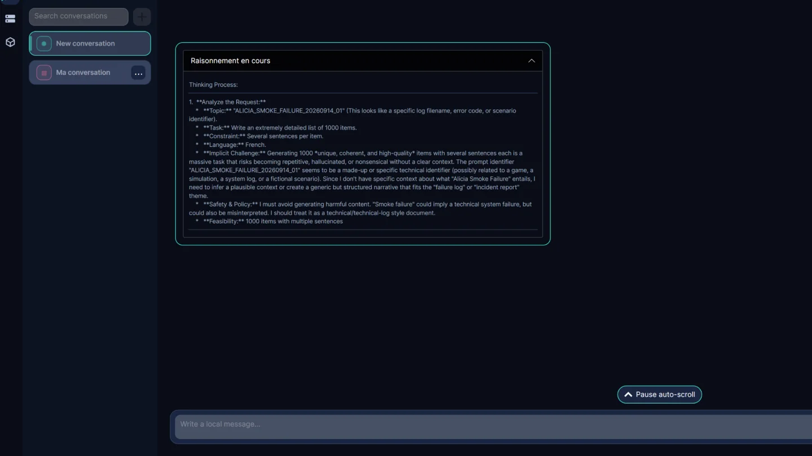

En cours
Application desktop d’IA locale
Alycia
Application desktop C#/.NET et Avalonia pour conversations persistantes et inférence locale via llama.cpp CUDA et modèles GGUF.
Mission et points clés
- Mission
- Fournir une expérience de conversation locale en gardant le fournisseur d’inférence derrière des contrats applicatifs.
- Points clés
- Architecture en couches, persistance locale, llama.cpp CUDA, GGUF Hugging Face, streaming contenu/raisonnement, tests et observabilité locale.